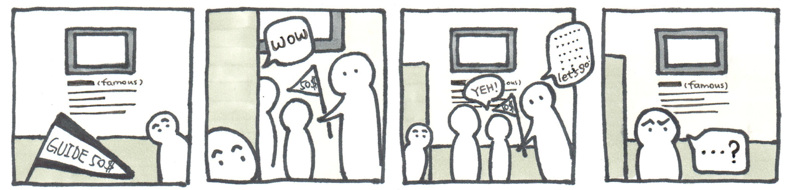
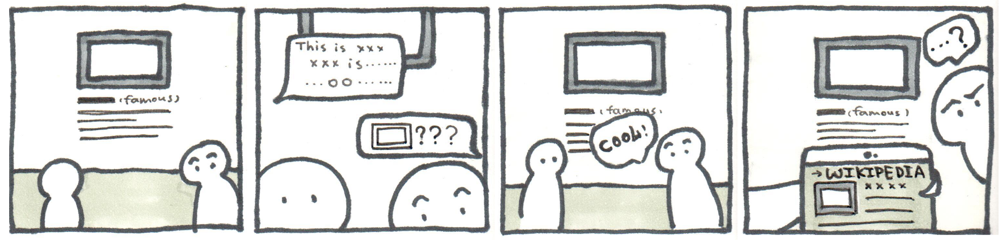
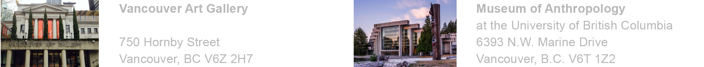
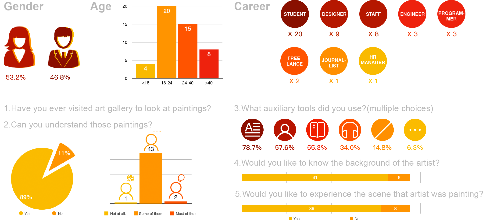

This is a project for people who want to get closer to famous artists. The project is a vr museum, and user can experience the artists’ life story and interact with the elements in the scene. Through experiencing the last pieces of artists’ work, we hope that people can immerse and enjoy more.
1.Famous paintings are always surrounded by amount of people in museums. But only a people can really understand them. Most of us are just looking around.
2.Some people would like to hear a recorded spoken commentary. But headphones is limited, and since not every gallery provide free manual explanation, it's not convenient and cheap for us to get professional help.
3. If we search the painting on the wikipedia, it will help you to understand the painting but it will add the burden of our body, and also effect our immersion toward the painting.
A lot of people have trouble understanding the paintings or artworks.

We made a questionnaire in order to know basic needs of ordinary people when they look at paintings in gallery. The first question is: Have you ever been to art gallery to see paintings? Only when the answer is “yes”, this questionnaire will be valid.
2016-7-17 Sunday 14:00-16:00
On that day, 47 samples were collected out of 50 with effective return-ratio 92.0% in 2 hours.

1.Have less people in gallery, so that user can concentrate on the paintings I like.
2.User want to buy souvenirs so that the memory of visiting the gallery can be saved.
3.Feel the emotion that the artist have, so that user can understand the paintings deeply.
4.Have a comfortable environment so that user can have passion to explore.
And these are the reasons that I chose VR to develop this project.
The project was designed to allow people understanding more about the famous masters’ painting through VR interaction. We chose Van Gogh’s last painting in life ——“Wheatfield with Crows”as an example, reverted the painting”Van Gogh's bedroom” to VR scene, added another room and some items .The background period is 1889 - 1990 when Van Gogh’s reached the peak so that users can be immersive, as if burst into the painter's life, get a glimpse of his emotion, at the same time pay tribute to the great painters like Van Gogh and so on.
During the art process, we read the biographical novel "yearn for life”, searched for information about Van Gogh, and reverted the story into the art scheme. After that, we designed the furniture and decoration of the painting room and bedroom, chose artistic style of retro and colorful and drew the scenes, room arrangement and texture.
Software: Photoshop CC 2015
In this VR project, every element needed to be 3d model. During that two weeks, I learned how to calculate dimensions of all the furniture and articles, use maya to make models and drew the rendering of the model texture. Some of these models need to be separated into different parts, so that user can interact with and play around.
Software: Autodesk Maya 2016, Photoshop CC 2015
We hadn’t learned how to write codes for VR projects before, so we searched the open source code using Javascript, studied and restructured it with the help of teacher. At the same time, we imported 3d model into Unity, added animation and collider and so on. After 3 nights that stay up late, we completed the programming part. Also, we finished the opening cinematic with Animation in Maya.
Software: Unity, Steam VR, Autodesk Maya 2016
Hardware: HTC Vive
At the end of the project, we invited some teachers and students in CDM to do some user tests. In the process, we told them what they need to accomplish and observed their behavior. Then we asked some prepared relevant questions to them. According to their feedback, we improved interactive logic and enriched some details, including opening cinematic and the story line.
Software: Steam VR
Hardware: HTC Vive